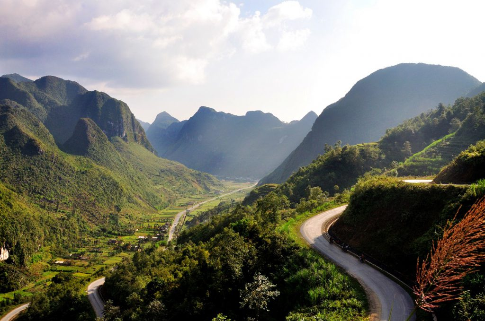
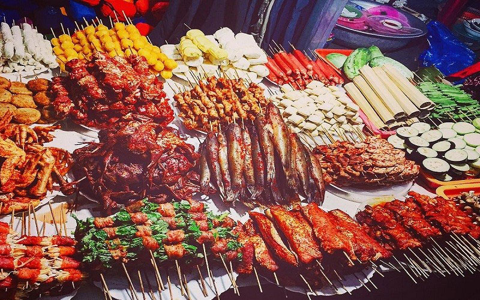
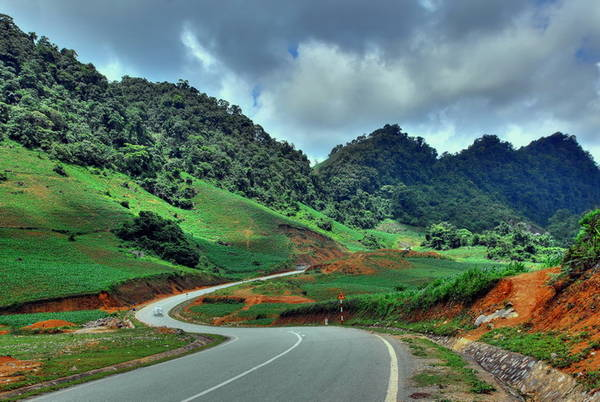

KINH NGHIỆM DU LỊCH TÂY BẮC
Núi rừng Tây Bắc được tạo hóa ban tặng cho nhiều cảnh sắc mỹ lệ, hoang sơ mà quyến rũ thu hút rất nhiều khách du lịch mỗi năm. Du lịch Tây Bắc, du khách sẽ có dịp được chiêm ngưỡng những thửa ruộng bậc thang chín vàng sắc lúa, những khúc đèo hùng vĩ quanh co uốn lượn, cuộc sống thường nhật vui tươi của đồng bào dân tộc… và những phút giây lắng đọng hào hùng trên mảnh đất Điện Biên Phủ – dấu ấn lịch sử một thời bi tráng của dân tộc.
Nếu bạn đang có kế hoạch ghé thăm những vùng đất xinh đẹp này, thì những kinh nghiệm du lịch Tây Bắc an toàn, tiết kiệm hữu ích sau đây sẽ giúp bạn có một chuyến đi đáng nhớ nhất.
1. Những cung đường du lịch Tây Bắc thường gặp
– Hà Nội – Hà Giang – Hoàng Su Phì – Xín Mần – Bắc Hà – Y Tý– Sapa – Mù Căng Chải – Hà Nội
– Hà Nội – Lào Cai – Sapa – Điện Biên – Sơn La – Mộc Châu – Hòa Bình – Hà Nội
– Hà Nội – Mộc Châu – Sơn La – Điện Biên – Sapa – Lào Cai – Hà Nội
2. Di chuyển tới Tây Bắc như thế nào?
Đường lên Tây Bắc xa xôi nhưng không quá khó đi. Từ Hà Nội tới Tây Bắc có rất nhiều phương tiện di chuyển khác nhau, đa phần mọi người lựa chọn xe khách để đảm bảo an toàn. Tốt nhất hãy lên kế hoạch và đi cùng team khoảng 4 người trở nên là hợp lý. Việc đi theo đoàn sẽ giúp tiết kiệm nhiều chi phí, mang lại nhiều trải nghiệm thú vị và gắn kết nhau hơn.
Hiện nay có rất nhiều phương tiện di chuyển đi Tây Bắc như xe khách, tàu đêm hoặc "gan dạ" nhất là phượt bằng xe máy. Nói chung dù chọn cách di chuyển nào đi chăng nữa thì cũng cần đảm bảo an toàn, tìm hiểu trước bản đồ các tỉnh Tây Bắc, lộ trình di chuyển để tránh chờ đợi mất thời gian. Đặc biệt những bạn đi phượt thì cần có tay lái vững vàng và thể lực tốt. Bởi đường lên Tây Bắc quanh co, có nhiều đoạn đèo dốc nguy hiểm. Theo những phượt thủ chia sẻ kinh nghiệm du lịch Tây Bắc thì những cung đường này không dành cho người mới, người tay lái yếu. Vậy nên bạn có thể lựa chọn đăng ký tour Tây Bắc của công ty du lịch bởi vì bạn vẫn có thể tham quan được hết các địa điểm nổi tiếng tại khu vực mà còn được đảm bảo an toàn bởi những lái xe chuyên tuyến kinh nghiệm đầy mình.

3. Văn hóa ẩm thực vùng tây bắc – đặc sản Tây Bắc
Các quán ăn trên cung đường này không nhiều, nhất là những chặng xa thị trấn, trung tâm thị xã, thành phố. Nếu thấy hàng quán, bạn nên dừng lại ăn, đừng kén chọn hoặc đợi quán tốt hơn, bạn có thể sẽ bị đói. Phần lớn hàng quán ở đây ít khách và khách đến vào các giờ khác nhau nên chủ quán ít khi nấu sẵn thức ăn. Chỉ đến khi bạn đến, gọi món thì chủ quán mới nấu để thức ăn được nóng sốt. Vì thế đừng ngại những quán ăn trông “nghèo nàn”, hãy mạnh dạn vào hỏi, bạn sẽ có bữa cơm nóng ấm bụng trước khi tiếp tục hành trình.
Các món ăn “tủ” của hàng quán cung đường Tây Bắc là đậu hũ sốt cà, bò xào cần, canh rau đay ăn với cà pháo… Mấy món này khách ăn thường xuyên nên thực phẩm tươi, nấu cũng ngon hơn, lại đủ chất cho hành trình dài. Vài nhà hàng đoạn Mộc Châu có món cá suối chiên khá ngon, ăn kèm với dưa muối chua. Đoạn Sơn La-Điện Biên có món măng chua, hoặc gà rang mặn…Ngoài ra còn có một số món mà bạn đừng bỏ lỡ khi phượt đến Tây Bắc như: cơm lam, thị trâu gác bếp, thắng cố, cá hồi, cá tầm, sâu chít,....

4. Ngủ nghỉ ở đâu tại Tây Bắc?
Vùng Tây Bắc, thông thường mỗi chặng đường khoảng 50 km sẽ có một thị trấn nhỏ. Mỗi thị trấn đều có nhà nghỉ, nhưng điều kiện và chất lượng dịch vụ hạn chế. Tốt nhất bạn nên tính toán cẩn thận hành trình để đến được các thành phố hoặc thị xã trung tâm. Có thể tham khảo thêm người địa phương để tìm chỗ nghỉ. Tìm chỗ ở gần chợ hoặc trên các đường chính trung tâm giúp bạn dễ tìm chỗ ăn uống và dạo phố đêm. Phần lớn các nhà khách, phòng trọ ở khu vực này giá khoảng 100.000đ – 200.000đ/đêm. Nên xem phòng trước khi quyết định nghỉ lại.
5. Những địa điểm du lịch Tây Bắc nhất định phải ghé qua
– Sapa (Lào Cai): Theo kinh nghiệm du lịch Tây Bắc, khi đến Sapa, bạn nên ghé thăm Nhà thờ Đá, núi Hàm Rồng, Cổng Trời, thác Bạc, bản Tả Van, Cát Cát, Lao Chải… Thưởng thức gỏi cá hồi, cháo cá hồi và thắng cố…
– Hồ Pá Khoang (Điện Biên): Cảnh sắc nơi đây vô cùng nên thơ và hữu tình. Thảm thực vật phong phú, địa hình đa dạng, khí hậu tốt thích hợp cho việc nghỉ dưỡng.
– Hang Tiên Sơn (Lai Châu): Từ một hang động hoang sơ chưa được cải tạo, khai thác đến nay, động Tiên Sơn đã trở thành một địa điểm du lịch giá rẻ hấp dẫn nằm trên trục hành lang du lịch Tây Bắc. Trong tương lai không xa, động sẽ là điểm đến không thể thiếu của du khách trong và ngoài nước khi đến Lai Châu – Tam Đường.
– Cao nguyên Mộc Châu (Sơn La): Đến Mộc Châu, ngoài “săn hoa”, “săn lúa”, các bạn đừng quên ghé thăm động Sơn Mộc Hương, rừng thông, chùa Chiền Viên, thác Dải Yếm, đỉnh Phiêng Luông, và các bản văn hóa của người Mông, người Dao ở Vân Hồ… nhé.

Trừ vài điểm đến đã được “du lịch hóa”, nhiều vùng đất dọc theo cung đường Tây Bắc còn khá hoang sơ, người dân chân chất hiền lành nhưng khi đến đây bạn phải tuyệt đối tôn trọng văn hóa của người bản địa.
Không đùa cợt quá mức, không trêu chọc các em gái địa phương, không cười nói ồn ào khi vào các bản làng vì sẽ làm phiền dân bản, không chụp ảnh họ nếu họ không cho phép hoặc có ý không vui.
Nếu bạn thân thiện, gần gũi, tôn trọng người bản địa, bạn sẽ nhận lại được những điều như vậy từ họ. Có khi bạn còn được mời vào nhà chơi và trò chuyện với chủ nhà. Dù muốn tìm hiểu đời sống của người dân, bạn cũng không nên dòm ngó quá mức vào các góc trong nhà, đặc biệt không ngó nghiêng vào chỗ ngủ của gia chủ.
Phải xem kỹ bản đồ về đường đi trước khi lên đường. Không nên đi cung đường này theo kiểu ngẫu hứng, sao cũng được. Để có một chuyến đi an toàn cho bản thân bạn và không ảnh hưởng đến người khác, cần chuẩn bị cẩn thận mọi thứ. Phải tính toán hành trình mỗi ngày để đi và đến an toàn.
Phải bảo vệ phương tiện di chuyển của mình, khi thấy có đoạn khó đi cần xuống xe quan sát trước khi vượt qua. Phải làm chủ vận tốc xe trong mọi tình huống. Khi thấy mệt nên tìm chỗ an toàn dừng lại nghỉ ngơi, không đi cố…
Nên dự trữ thức ăn trên xe như bánh ngọt, chocolate, vài loại trái cây như táo, mận, cam.. phòng khi đói bụng mà không gặp hàng quán dọc đường. Luôn mang theo áo ấm dù đi cung đường này vào mùa đông hay mùa hè.
Và đừng quên mua nhiều kẹo, bánh để sẵn trong xe vì bạn có thể gặp trẻ em ở bất cứ nơi nào trên đường và món quà tuyệt vời nhất cho lũ trẻ vùng cao chính là bánh, kẹo. Nhìn lũ trẻ vui cười hớn hở với những chiếc kẹo xinh xinh, chuyến đi của bạn sẽ thêm trọn vẹn và ấm áp hơn.
Hi vọng với những kinh nghiệm du lịch Tây Bắc mà Dream Travel chia sẻ với các bạn trên đây sẽ giúp bạn có một hành trình thật như ý và nhiều niềm vui !